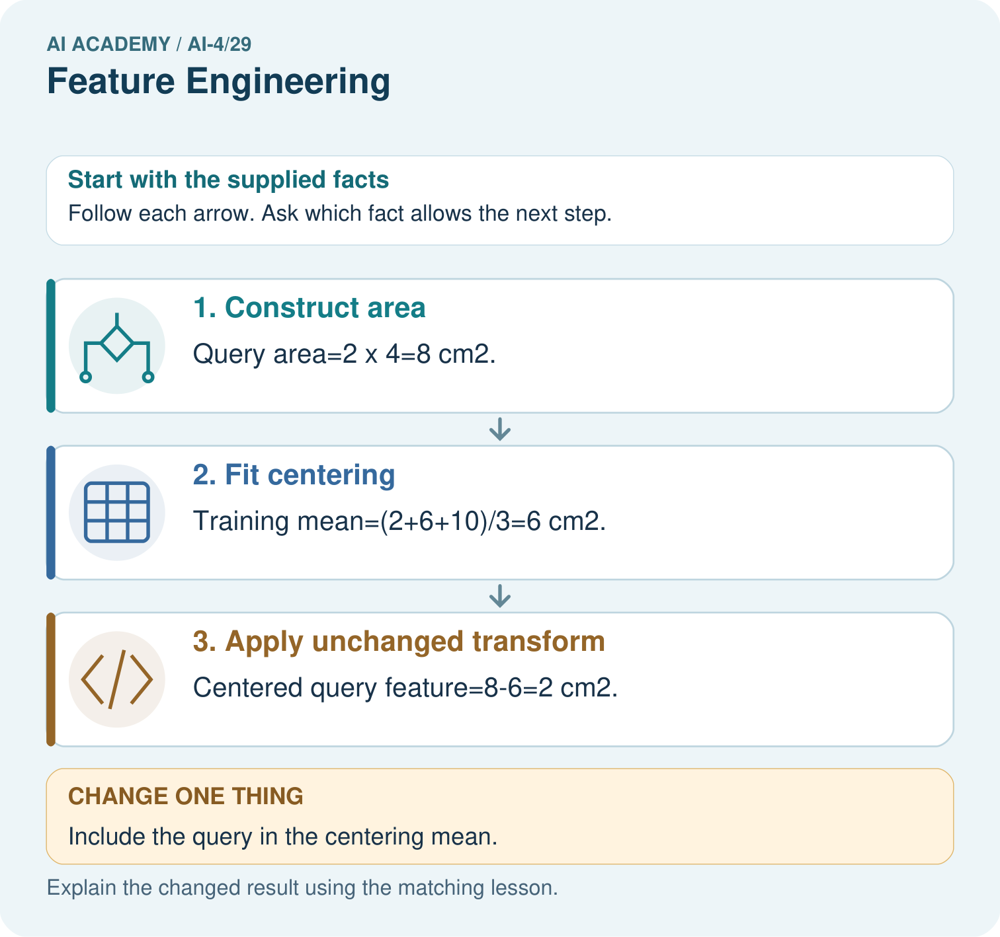

AI Academy · Level 4 · Grade 9 · Week 29 · Teacher guide
Feature Engineering
Learn to understand, design, build, test and explain AI systems responsibly.
Project: Responsible Plant Classifier
Teacher guide · 1 of 6
Feature Engineering
Teach the learning cycle
Primary target: Create features available at prediction time
| Session | Sequence and minutes | Resources |
|---|---|---|
| Session 1 · Understand · 45 min | 0–7: recall and prerequisite; 7–15: inspect the concrete case and predict; 15–30: teacher models the worked trace; 30–40: learners explain a step using the text and visual; 40–45: check the core idea. | Sections 1–6; record the brief recall in the workbook. |
| Session 2 · Practise · 45 min | 0–5: retrieve the procedure; 5–15: W2 completion practice; 15–23: explain and check with a partner; 23–30: each learner answers the misconception check; 30–40: targeted reteaching or a harder variation; 40–45: prepare the investigation. | Sections 7–10; use the matching workbook W2 and misconception check. |
| Session 3 · Investigate and transfer · 45 min | 0–5: retrieve the decision rule; 5–20: investigate or trace; 20–30: start the independent case; 30–38: connect the project; 38–43: act on feedback; 43–45: plan the return check. | Sections 9 and 11–14. Give extra time to finish the full task set; use Section 15 when the week includes a coding lab. |
This is a starting allocation of 135 minutes, not a validated duration. Preserve all named topics. Schedule extra time for connected examples, the full investigation, independent cases and project building. Repeated copies of a case share one recorded attempt; they are not new evidence.
Retrieval answer guidance
Learning Curves
Without opening the old lesson, explain one key idea from Learning Curves. Give an example and a mistake that the idea helps you avoid.
Look for: Read training-size learning curves
Reference example, not the only acceptable wording: Teacher explanation: Mean(5+7+6)/3=6; range 7-5=2.
Reproducible Experiments
Without opening the old lesson, explain one key idea from Reproducible Experiments. Give an example and a mistake that the idea helps you avoid.
Look for: Record enough detail to reproduce a run
Reference example, not the only acceptable wording: Teacher explanation: Mean 70 percent; range 80-60=20 percentage points, across the three declared runs.
Hold Out Test Data
Without opening the old lesson, explain one key idea from Hold Out Test Data. Give an example and a mistake that the idea helps you avoid.
Look for: Freeze the full evaluation procedure before testing
Reference example, not the only acceptable wording: Teacher explanation: Accuracy 15/20, precision 3/5, recall 3/6. Report TN 12 FP 2 FN 3 TP 3 and blocked positive.
Use the student module and workbook section with this exact week title. The worked case, independent question and answers below form one aligned lesson sequence.
What the learner must demonstrate
Length=12 cm, width=30 mm. Compute length/width using matching units. Explain handling for zero or missing width and where learned scaling is fitted.
Concept to explain
Feature engineering transforms raw inputs into useful structure while preserving prediction-time availability and avoiding leakage.
| Term | Meaning |
|---|---|
| transformation | rule converting raw values |
| derived feature | new input calculated from existing inputs |
| aspect ratio | width divided by length |
| feature pipeline | fixed ordered transformations |
Prepare the class
Use the supplied scenario, student illustrations and blank paper. For numeric work, offer counters or a calculator after learners show the setup. Fictional records are supplied; personal data and paid accounts are unnecessary.
Allow 80 minutes: recall 8; explanation 12; worked demonstration 15; guided practice 20; independent assessment 15; project and reflection 10. Extend the lab into a second session when needed.
Preparation for the connected explanation
Teach two 45-minute sessions. This week focuses on feature engineering. Model the worked example first, collect the new W 4 case independently before feedback, and use the fresh retry to check transfer. Award credit for traceable reasoning and bounded claims, including justified uncertainty.
Readiness answer
Evaluation values must not influence the learned transformation.
Printed student lesson and workbook
Paper, pencils and a calculator for fractions
The fictional examples and a blank evidence table
Saved classroom project records for critique; no personal student dataset required
Apply the connected idea: Relationships and confounding
Teach Week 21 as a two-session investigation using fictional data. In a fictional log, groups that practiced longer also scored higher: 1 hour with 4 points, 2 hours with 6 and 3 hours with 8. This pattern is an association. Prior experience could affect both practice choices and scores. The table alone cannot establish the effect of adding practice time. Assess the three stated outcomes through the independent task, not by copying the worked result.
Readiness answer
No; selection and coverage limit the claim.
Python 3 editor with a fresh local practice file
Paper trace table and the student workbook
Fictional input records from this lesson; no real student identifiers
End goal for the pictorial case
By the end, I can explain feature engineering using a traced example and a stated limitation.
This added worked case illustrates the week’s main idea. Retain all original and connected topics; schedule its practice within the teaching cycle.
Teacher guide · 2 of 6
Explain the mechanism
Explain the mechanism
Trace the information, fitted behavior, and evaluation proof separately.
QUESTION Create and justify two plant measurement features.
MODEL IDEA Feature engineering transforms raw inputs into useful structure while preserving prediction-time availability and avoiding leakage.
PROOF NEEDED Use an unseen case, visible calculation, error analysis, and a stated limitation.
UNDER THE HOOD Raw leaf length=8 cm and width=4 cm. Derived aspect_ratio = 4 ÷ 8 = 0.5.
Draw a fresh data → model → prediction → evaluation trace:
Predict first. Then check each step. A correct answer without visible evidence cannot be audited.
STEP 1 Raw leaf length=8 cm and width=4 cm.
STEP 2 Derived aspect_ratio = 4 ÷ 8 = 0.5.
STEP 3 Color histogram summarizes pixel ranges without using the target label.
STEP 4 Fit transformation settings on training data only; document unit, purpose, availability, and leakage check.
CHECK Verify the denominator, unit, split, class definition, and data version before interpreting a score.
Recalculate, retrace, or restate the evidence independently:
Concrete teaching case
Features are leaf length and width in cm; add length/width.
Compute for8 and2; state boundary checks.
Exact explanation to model
Ratio=4, unitless with matching units. Guard zero/missing width; fit learned transforms on training only.
Explain the added worked example
A useful feature represents information available when the prediction is made. In a fictional parcel task, length and width are measured before packing, so area=length*width is available. The final delivery delay is not available when predicting dispatch time. A strong correlation cannot make a future value legitimate.
Use fictional classroom data throughout this investigation. Keep the task, units, reference labels and data split visible as you reason. Earlier weeks supplied the model-building process; this week examines feature engineering.
Training rectangles have lengths [2, 4, 6] and widths [3, 2, 1], so areas are[6, 8, 6] square cm. Training mean area is 20/3. A validation rectangle length 5 width 2 has area 10 and centered area 10-20/3=10/3. Freeze the training mean; do not recompute it with validation.
Before continuing, underline the decision rule and circle the evidence that supports the conclusion. Explain the example to a partner without replacing the counts or conditions with a stronger claim. Keep the distinction between an observed result and a proposed next step.
Key terms
| Term | Meaning |
|---|---|
| Feature engineering | Constructing model inputs from available measurements |
| Derived feature | An input computed from other inputs |
| Leakage | Information entering a model that would not be available legitimately |
| Availability | Whether a value exists when a prediction is needed |
Apply the connected idea: Relationships and confounding
In a fictional log, groups that practiced longer also scored higher: 1 hour with 4 points, 2 hours with 6 and 3 hours with 8. This pattern is an association. Prior experience could affect both practice choices and scores. The table alone cannot establish the effect of adding practice time.
The numbers rise together in these three invented records. A description such as higher practice hours went with higher scores is supported. A claim that one extra hour guarantees two more points goes beyond the observations. No statistical calculation is required to see this limit.
Prior experience, motivation or available support could plausibly affect both. Explain the connection to each. Exit: Small size, constructed data, conditions and measured outcome; do not generalize broadly or claim classroom effectiveness.
Model the reasoning aloud
Use the complete worked example below before asking learners to complete W2. Reveal a small part, invite a prediction, then explain the deciding step. These teacher notes contain solutions; do not reveal the independent case answer during modelling.
Feature engineering at a glance
| Thinking move | Teacher prompt |
|---|---|
| Plan | What is given? What is the question? Which procedure fits these facts? |
| Do | Point to each input and intermediate step in the worked trace. Name the rule that allows the next step. |
| Check | Does the output answer the question? Which assumption or limitation prevents a larger claim? |
Use the diagram and verbal explanation together. Ask learners to match a sentence to a specific visual step; do not assign learners fixed visual or auditory learning styles.
A pictorial worked case: Feature Engineering
Engineer a feature with a transformation defined before evaluating a new leaf.
The facts we will use
Training rectangular leaf cards have areas [2, 6, 10] cm². Area=length×width; center by training mean. Query length 2, width 4 cm.
All inputs and outcomes in this worked example are invented classroom data; no real model run is claimed.

Read the picture one step at a time
Why this result follows
Read the picture in order. Centered query feature=8-6=2 cm². The arrows show which recorded input or intermediate result each decision uses. Explain the deciding step aloud before checking the changed case; pointing to the final answer alone does not show how it follows.
What this example does not establish
Area is a geometric toy feature. Useful predictive relationships need separate evaluation, and real leaves need a suitable measurement definition.
Change one thing in the pictured case
Change: Include the query in the centering mean.
Prediction: Mean becomes26/4=6.5 cm² and query feature1.5 cm²; this changes the fitted transformation.
Reason: A held-out input should not silently redefine a training-fitted preprocessing step.
Ask while showing the picture
Cover the result. Ask learners to name the inputs and predict the next step. Uncover one step, connect the icon to the actual procedure, and explain its evidence. Then change the supplied condition and compare. The picture is a representation; it does not document execution of a real AI model.
Teacher guide · 3 of 6
Demonstrate and guide practice
Demonstrate and guide practice
Board sequence
Write the given facts: Features are leaf length and width in cm; add length/width.
Write the question to explain: Compute for8 and2; state boundary checks.
Reveal after predictions: Ratio=4, unitless with matching units. Guard zero/missing width; fit learned transforms on training only.
Keep for an independent attempt: A feature is leaf_length divided by leaf_width. A row has width zero. What should the preprocessing rule do before division?
Classroom dialogue
Ask: Which facts are given, and which would we have to assume? Learners mark relevant details before discussing answers.
Say: Predict first. Show the rule, information path or calculation that would produce the result. A correct guess is not yet an explanation.
Reveal reasoning one step at a time. Explain why a tempting alternative fails. Write units and denominators for arithmetic, trace conditions for decisions, and identify supporting sources for claims.
In pairs, one learner solves while the other checks evidence; exchange roles. Remove the worked answer before independent assessment.
Model these guided questions
Guided response: Area 10; centered 10-20/3=10/3 square cm. Validation does not change the fitted mean. Exit response: Compare with and without area on the same validation records, fitting all transformations on training and reporting the declared metric and feature availability.
Case-specific teaching sequence
| Stage | Teacher action |
|---|---|
| Session 1 start to 7 minutes | Use the prerequisite question: Why must preprocessing be fitted on training only? Check the explanation before proceeding. |
| 7 to 18 minutes | Read the opening and model the worked evidence. Ask students to identify feature engineering in context. |
| 18 to 32 minutes | Complete W 1 and W 2 with support: compute features; transform validation. Require the evidence, not only the final response. |
| 32 to 45 minutes | Read the visual row by row. Collect the guided explanation and compare reasoning in pairs. Connect each conclusion to the stated evidence. |
| Session 2 start to 8 minutes | Retrieve the distinction between feature engineering and derived feature. Invite a counterexample to an overconfident claim. |
| 8 to 20 minutes | Discuss the application and complete W 3: Why is delivery delay invalid for a prediction made before dispatch? |
| 20 to 35 minutes | Collect W4 independently before giving hints. Assess these outcomes: Create features available at prediction time; Fit feature transformations using training evidence only. Record any support used. |
| 35 to 45 minutes | Use W 5 and the exit response to assess limits. Give targeted feedback, then the fresh retry. Save evidence of independent understanding. |
Teach the connected idea
| Stage | Teacher action |
|---|---|
| Session 1 start to 7 minutes | Retrieve the prerequisite and explain the purpose in the opening section. |
| 7 to 20 minutes | Read the worked example and diagram; ask learners to trace each step aloud. |
| 20 to 33 minutes | Complete W1 and W2, then compare predictions with observed results. |
| 33 to 45 minutes | Collect the guided prediction before running; discuss a mismatch and its cause. |
| Session 2 start to 8 minutes | Retrieve the main rule without showing the previous answer. |
| 8 to 20 minutes | Use W3 to diagnose and repair the stated failure; rerun an earlier case. |
| 20 to 35 minutes | Collect W4 independently, including code or plan, predictions and explanations, before hints. |
| 35 to 45 minutes | Discuss W5 and the exit; use the fresh retry when support was needed. |
Reduce help deliberately
Completion task: Center the validation area using the frozen training mean.
Teacher check: Teacher explanation: Area 10; centered 10-20/3=10/3 square cm. Validation does not change the fitted mean.
Start by identifying the given inputs together. Leave the intermediate steps blank. If needed, model one step, then withdraw that help on the next step. Move to a full trace only when the partial trace is understood. For partners, alternate explainer and checker; collect a response from every learner before discussion.
Individual reasoning check
Use the worked case for Feature engineering. Proposed explanation: “A final answer is enough”. Decide whether this explanation is supported. Point to the step or supplied fact that decides; explain your repair if needed.
Expected correction: Ask for the relevant counts, units, procedure or saved record. For this week: Areas 6, 8, 6 square cm; training mean 20/3 square cm.
Collect explanations, not only yes/no votes. If a misunderstanding is common, re-model the relevant step for the class. If it affects a few learners, give a short targeted group explanation while others solve a more demanding variation.
Connected teaching cycle: Relationships and confounding
Target: Describe associations without claiming cause
Reserve further sessions for this topic; the 135-minute primary plan does not absorb all added content.
Completion practice: Explain how prior experience could relate to both practice time and score.
Teacher check: Experienced learners may choose different practice amounts and also score higher even without additional practice.
Individual check: For Relationships and confounding, use its worked case to evaluate this proposed explanation: “A successful run proves the conclusion”. Explain the deciding step.
Expected correction: A fairer comparison could offer the same task, instructions and assessment and randomly assign fictional groups to practice conditions. In real classrooms, a teacher must approve any activity and protect equal learning opportunities; this lesson uses a paper plan.
Apply the same support, independent transfer and delayed-review decisions to the named connected-topic workbook tasks.
Pictorial practice question
What should be saved so another group transforms the query identically? Point to the relevant step in the picture, then write the changed result and the rule or evidence that supports it.
Reasoned teacher answer
The area definition, cm² units and training mean 6; the correct declared centered feature is 2 cm². Changed-case check: Mean becomes26/4=6.5 cm² and query feature1.5 cm²; this changes the fitted transformation. A held-out input should not silently redefine a training-fitted preprocessing step.
Changed-case reasoning: Mean becomes26/4=6.5 cm² and query feature1.5 cm²; this changes the fitted transformation. A held-out input should not silently redefine a training-fitted preprocessing step.
Collect each learner’s explanation before discussion. Use the first missing connection between input, deciding step and result to choose support. This question is worked-case practice, not fresh mastery evidence.
Teacher guide · 4 of 6
Run the weekly evidence lab
Run the weekly evidence lab
Keep the test conditions fixed, record every result, and change only one planned factor.
1. Write the hypothesis and expected evidence before running.
2. Feature Workshop: design two transformations, compute examples, audit leakage, and compare one controlled validation result.
3. Run one normal, one boundary, one missing, and one shifted case.
4. Calculate the metric from raw counts or row-level errors.
5. Interpret what changed, what did not, and what remains unsafe or unknown.
Make the lab runnable
Use the concrete case as the shared normal case and the independent question as a second case. Each pair creates a boundary or missing-information case and predicts its result before testing. Keep the expected result separate from an observed mistake.
| Record | What to capture |
|---|---|
| Input or evidence | Exact data, instruction or claim |
| Expected result | Answer or safe fallback declared before the run |
| Observed result | Actual result, including errors |
| Explanation | Rule, calculation or evidence explaining the outcome |
| Next test | One justified change and a new prediction |
Diagnose and reteach
MISCONCEPTION TO REPAIR Creating many features automatically gives the model more useful information.
For guessing, return to given facts and request a trace. For vocabulary without application, use one example and one non-example. For arithmetic errors, check the setup before the calculation. Finish with a different uncoached case before recording mastery.
Address these additional misconceptions
A final answer is enough: Ask for the relevant counts, units, procedure or saved record. For this week: Areas 6, 8, 6 square cm; training mean 20/3 square cm.
A stronger claim makes a stronger project: Compare with and without area on the same validation records, fitting all transformations on training and reporting the declared metric and feature availability.
The new case can be copied from the example: The independent task changes the evidence. Require a fresh explanation: Training mean 8 square cm; new area 12 square cm; centered feature 4 square cm.
Check these misconceptions
A successful run proves the conclusion: A fairer comparison could offer the same task, instructions and assessment and randomly assign fictional groups to practice conditions. In real classrooms, a teacher must approve any activity and protect equal learning opportunities; this lesson uses a paper plan.
Matching the example is enough: Require the new W4 case, explicit predictions and an explanation. Fresh retry: a log links more library visits with higher reading scores. Reading interest may influence both. Require a supported association statement and a fairer comparison plan.
A convenient shortcut preserves meaning: A chart title Practice causes success overstates the evidence. Replace it with Practice time and scores in three fictional records, and describe the possible confounder. Better wording does not repair the study, but it makes the report honest.
Match the support to the first error
| What the response shows | Next teaching action |
|---|---|
| Missing or misread facts | Read the case aloud, mark supplied versus unknown facts, and let the learner restate it. |
| Wrong procedure | Return to the deciding step in the worked case. Contrast it with the proposed incorrect explanation. |
| Arithmetic or implementation error | Trace intermediate values or lines; preserve the first mismatch and retry that step. |
| Correct result without a reason | Ask for a trace and a changed case before marking independent understanding. |
| An unsupported wider claim | Ask which supplied evidence supports the claim and which further observation would be needed. |
Offer an oral explanation, drawing, enlarged visual or fewer examples when that removes a reading/writing barrier. Keep the same reasoning goal. Stretch secure learners by changing a boundary or assumption and asking them to defend the effect, not simply by assigning more of the same questions.
Teacher guide · 5 of 6
Assess and explain the answers
Assess and explain the answers
Worked case answer
Ratio=4, unitless with matching units. Guard zero/missing width; fit learned transforms on training only.
Independent question
A feature is leaf_length divided by leaf_width. A row has width zero. What should the preprocessing rule do before division?
Expected independent answer
Detect zero or invalid width, investigate or handle it using a documented rule, and avoid division by zero. Apply preprocessing consistently without learning from test data.
What counts as evidence
| Criterion | 0 points | 1 point | 2 points |
|---|---|---|---|
| Result | Incorrect or absent | Partly correct | Correct with necessary conditions |
| Reasoning | No supporting trace | Some steps | Clear mechanism, calculation or source support |
| Limit | Overclaims certainty | Vague limitation | Relevant uncertainty or missing fact |
| Transfer | Copies without adapting | Adapts with prompts | Solves a changed case independently |
Use 6/8 as a classroom checkpoint, with 2 required for both Result and Reasoning. This is a proposed teaching rule, not a validated certification threshold. Do not count a coached answer as independent mastery; correct unsafe or unsupported claims regardless of total.
Feedback
Ask the learner to find the evidence that challenges this claim: “A feature formula is safe for every row just because it works on typical examples.” Keep the first attempt and an uncoached retry separate.
Original transfer answer
Width=3 cm, ratio=4 and unitless. Zero width makes division undefined; missing width is not zero. Use a documented validation/fallback policy. Fit learned scaling only on training data and apply it unchanged to other partitions.
Explanations for the additional workbook examples
W1 Compute features
Compute the worked areas and their training mean.
Teacher explanation: Areas 6, 8, 6 square cm; training mean 20/3 square cm.
W2 Transform validation
Center the validation area using the frozen training mean.
Teacher explanation: Area 10; centered 10-20/3=10/3 square cm. Validation does not change the fitted mean.
W3 Reject leakage
Why is delivery delay invalid for a prediction made before dispatch?
Teacher explanation: The value is only known later, so using it would not match the information available at prediction time.
W4 Apply independently
Training areas [4, 8, 12]. A new rectangle has length 3 width 4. Compute the training mean and centered new feature; state units.
Teacher explanation: Training mean 8 square cm; new area 12 square cm; centered feature 4 square cm.
W5 Plan a fair comparison
How would you test adding area without claiming it must help?
Teacher explanation: Compare with and without area on the same validation records, fitting all transformations on training and reporting the declared metric and feature availability.
Relationships and confounding — W1 Describe the evidence
State the pattern in the three worked records without using caused or guaranteed.
Higher recorded practice hours are associated with higher scores in these three records.
Relationships and confounding — W2 Identify a confounder
Explain how prior experience could relate to both practice time and score.
Experienced learners may choose different practice amounts and also score higher even without additional practice.
Relationships and confounding — W3 Repair an overclaim
A learner predicts every student gains 2 points per extra hour. Explain why that is unsupported.
The three observations do not establish a universal causal rule or predict every individual; other factors and variation are unmeasured.
Relationships and confounding — W4 Plan independently
A fictional dataset links more hints used with lower scores. Give a noncausal explanation and plan a fairer comparison of whether hints help.
Learners finding tasks harder may use more hints and score lower. Use comparable tasks and starting skill, a teacher-approved or paper random-assignment plan, same outcome measure and report uncertainty; do not deny needed support.
Relationships and confounding — W5 State a remaining limit
Even a better comparison has only four fictional groups. What should be reported?
Small size, constructed data, conditions and measured outcome; do not generalize broadly or claim classroom effectiveness.
Assess independent transfer
Selected case: Training areas [4, 8, 12]. A new rectangle has length 3 width 4. Compute the training mean and centered new feature; state units.
Selected case answer
Teacher explanation: Training mean 8 square cm; new area 12 square cm; centered feature 4 square cm.
| Dimension | Evidence required |
|---|---|
| Explanation | Names the applicable idea or procedure and ties it to the supplied facts. |
| Trace and result | Preserves the given inputs and shows the relevant intermediate steps; distinguishes a prediction from an observed execution. |
| Limits | States the assumptions, missing evidence or conditions under which the result would change. |
Record each dimension as not yet, with support, or independent. Accept a valid alternative procedure with a defensible trace. Do not penalise an honestly recorded model failure if the learner correctly explains its evidence and limits.
Feedback that the learner uses
Name the earliest unsupported step and give one action to repair it. Have the learner make that repair now and explain why. Then assess the relevant skill on a fresh, fully specified case. Confirm it was not previously practised with feedback; solve and check the new case before assigning it. A follow-up design prompt is a starting brief, not automatically an equivalent test.
Teacher guide · 6 of 6
Connect and extend learning
Connect and extend learning
Responsible Plant Classifier
Add only justified Plant Classifier features, with formula, source fields, expected benefit, and leakage test.
Keep the decision, input, result, explanation and remaining limitation in the project evidence record. Retrieve this record next week rather than restarting the project.
Support and stretch
Use a tiny labelled dataset, explicit units and a named positive class. Stretch: require a baseline, held-out evaluation and subgroup or shifted-condition analysis with denominators.
Exit reflection
Ask for one decision the learner can now justify and one situation requiring more evidence or human review. Confidence ratings are separate from correct independent performance.
Bridge to the next week
Next: Week 30: Improve Generalization. Retrieve today’s evidence and identify what carries forward and what is new.
Support and fresh reassessment
Provide a blank evidence table and allow a verbal explanation before writing. Highlight the given conditions without supplying the W 4 conclusion. Use feature engineering and derived feature in full sentences. Extension: alter one condition in the worked example and explain which conclusion changes and which remains supported.
For independent W 4, require: Training mean 8 square cm; new area 12 square cm; centered feature 4 square cm. Fresh retry training areas [3, 6, 9], new rectangle 2 by 5: training mean 6, new area 10, centered 4 square units. Require training-only fitting. Mark each criterion as independent, supported or not yet demonstrated. Reassess the reasoning after feedback; do not replace the first attempt silently.
Next week: Experimental records and seeds. Carry forward the saved evidence and the distinction between development choices and justified claims.
Readiness and reassessment for Relationships and confounding
Draw arrows from the proposed confounder to both observed variables. Extension: explain why reversing cause and effect can also fit some observational patterns.
Independent W4 evidence: Learners finding tasks harder may use more hints and score lower. Use comparable tasks and starting skill, a teacher-approved or paper random-assignment plan, same outcome measure and report uncertainty; do not deny needed support. Record whether the learner needed no help, a hint or explanation. Fresh retry: a log links more library visits with higher reading scores. Reading interest may influence both. Require a supported association statement and a fairer comparison plan.
Plan the delayed return
Suggested return points in this level: ai-4/30, ai-4/32, ai-4/35. Use actual classroom dates, adjusting for holidays and gaps. One, three and six teaching weeks are scheduling choices, not a claimed optimal spacing.
At a delayed check, ask for the idea from memory and a changed application. Compare with the earlier independent response and record support used. For a new level, revisit the previous capstone before checking the new prerequisites.
| Record | Teacher evidence |
|---|---|
| Learner code and date | |
| Concept and case used; prior exposure | |
| Explanation / trace / limits | |
| Support and first repair | |
| Changed case and delayed outcome | |
| Next teaching action |
Use the evidence to choose reteaching or the next step. A completed page, confidence rating or attractive project does not by itself demonstrate understanding.
Project evidence from this case
For your Responsible Plant Classifier, save the input, procedure, observed result and limitation of this check. Label this worked example as practice; use a different, previously unreviewed case when checking independent understanding.